Arquitetura
O AGV foi desenhado de forma a seguir um caminho predefinido (Linha chão), nesta parte do relatório mostramos a sua arquitetura através de um diagrama de blocos. O ATmega328p é responsavel por todas as operações lógicas e através de código decide a direção do carro (mudando o valor de PWM em OCR1A - Porta digital 9), se este está parado ou a andar, e a velocidade dos motores (PWM em OCR2A E OCR2B). Este também através de um contador e do Timer/counter 0 faz com que um LED pisque a 1Hz e liga e desliga luzes conforme um LDR.
Figura 4 - Diagrama de Blocos AGV.
Hardware
Nesta parte do relatório apresentamos o hardware que foi utilizado no nosso projeto.
Microcontrolador
Por ser um microcontrolador que já tínhamos e estávamos familiarizados a usar escolhemos o ATmega328p,
para tornar a sua programação mais fácil foi usada a verão deste que se encontra ligada ao arduino, não
foram utilizadas bibliotecas de arduino apenas o seu hardware. Este funciona a uma frequência de 16MHz
devido à existência do oscilador de cristal presente no arduino[7], consideramos ser um microcontrolador que
se adequava aos nossos objetivos devido à sua rapidez assim como os 8 bits existentes nele serem suficientes.
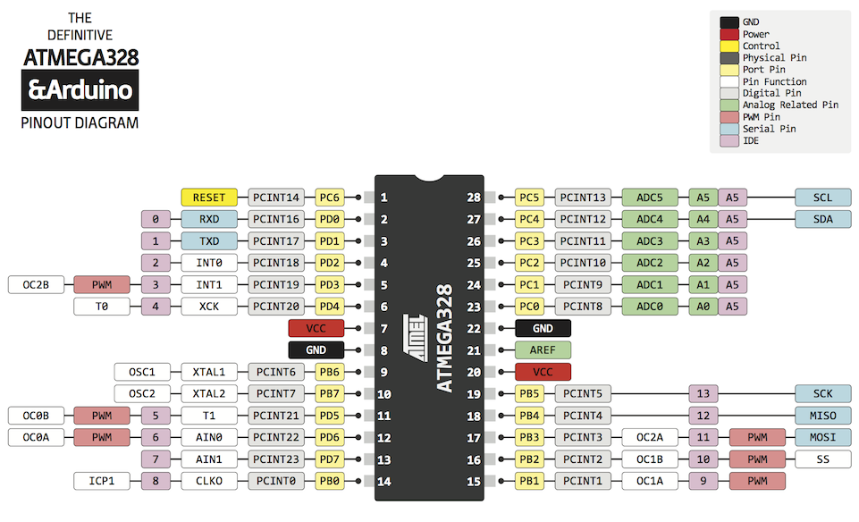
Figura 5 - Pinout do ATmega 328p com portas do Arduino.
Motor DC
São usados 2 motores DC para fazer o carro movimentar, este tem tração traseira e
estes são alimentados com 12 Volts e a sua velocidade é controlada por PWM[8].
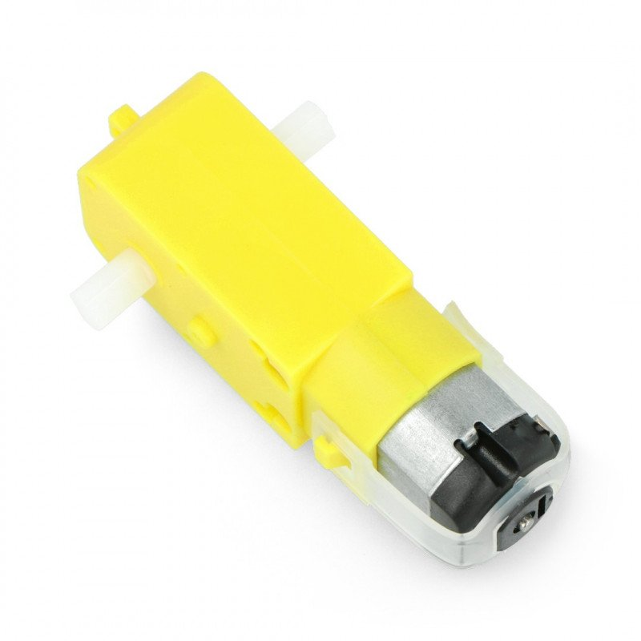
Figura 6 - Motor DC.
Motor Driver L298N
É um módulo constituído pelo driver L298N, de dupla ponte H, capaz de controlar 2 motores DC ou
um motor stepper bidirecional. Por possuir um regulador de tensão interno, quando alimentado até 12V, este
regulador alimenta os circuitos lógicos internos, permitindo um output de 5V para outras funções[9].
Figura 7 - Motor Driver L298N.

Sensores IR
Usamos dois sensores IR TCRT5000 para controlar o carro, estes têm um pin analogico que não é usado
e os valores são registados usando a sua porta digital que fica a 0 quando este está a detetar um objeto e a 1 quando
nenhum objeto é detetado[10].
Figura 8 - Sensor IR TCRT5000.
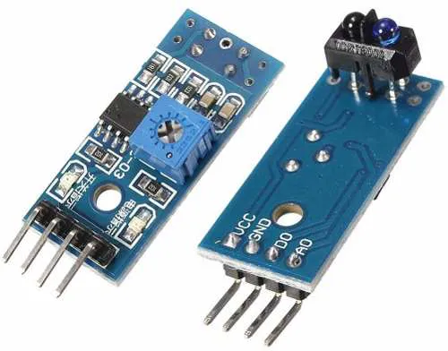
Motor Servo SG90
Escolhemos este motor devido à sua capacidade de virar 180º, colocando-o no centro
este consegue ser usado para virar para a esquerda/direita 90º. O motor é controlado por um PWM que varia entre
1ms e 2 ms, sendo que se encontra no meio quando o tempo ativo é de 1.5ms[11].
Figura 9 - Motor Servo SG90. 
Amplificador de Instrumentação INA128P
Os INA128P são amplificadores de instrumentação de alta precisão e baixa potência.
Admite uma elevada gama de tensões de alimentação e permite ganhos entre 1 e 10000[12].
Figura 10 - INA128P.
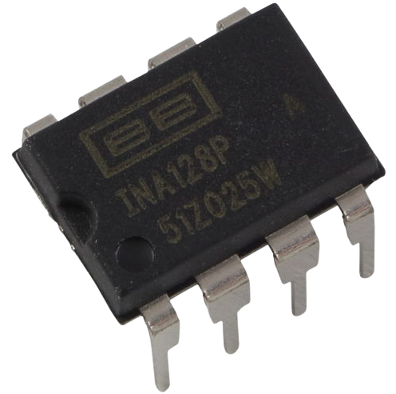
Regulador de Tensão LM7805
O LM7805 é um IC capaz de converter tensões entre 7V e 25V numa tensão fixa de 5V.
É escolhido devido ao seu baixo custo e versatilidade[13].
Figura 11 - LM7805.
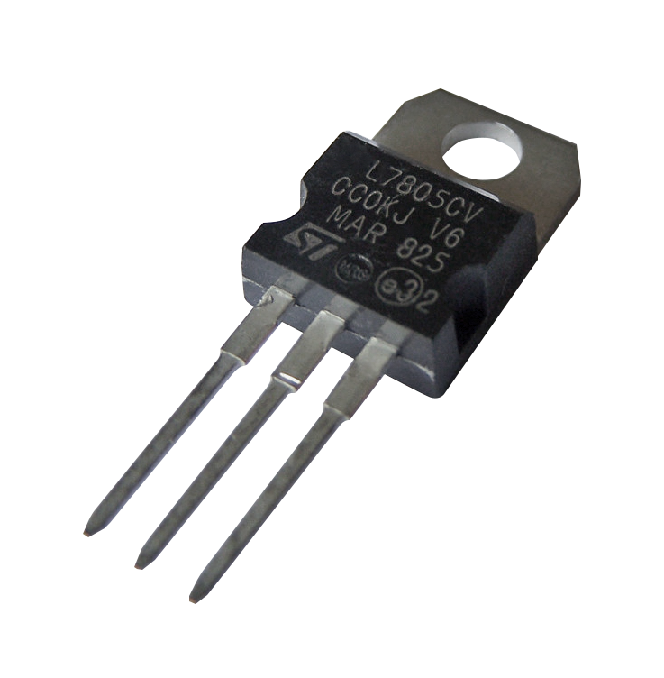
Light Dependent Resistor
É utilizado um LDR de forma a obter a iluminação da área, O sinal adquirido é
posteriormente linearizado e amplificado com recurso a uma ponte de Wheatstone e um Amplificador de Instrumentação.
Figura 12 - LDR.
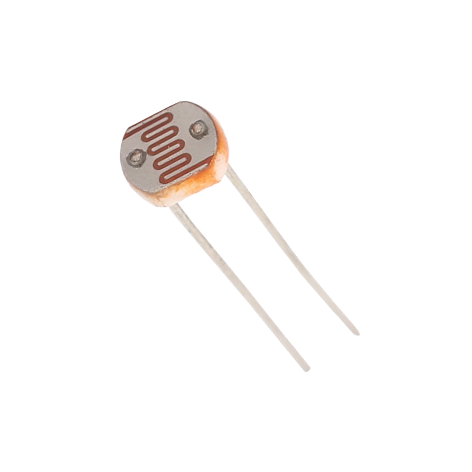
LED
Usamos um LED no circuito de forma a mostrar um timer de 1Hz.
Figura 13 - LED.
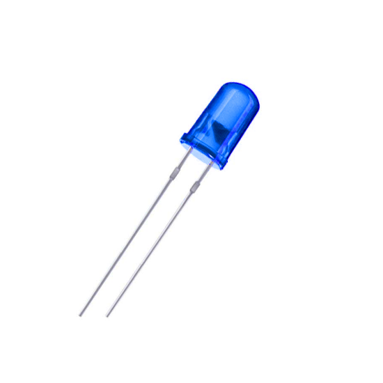
Esquema Elétrico
Encontra-se aqui o esquema elétrico do circuito.
Figura 14 - Circuito Elétrico.
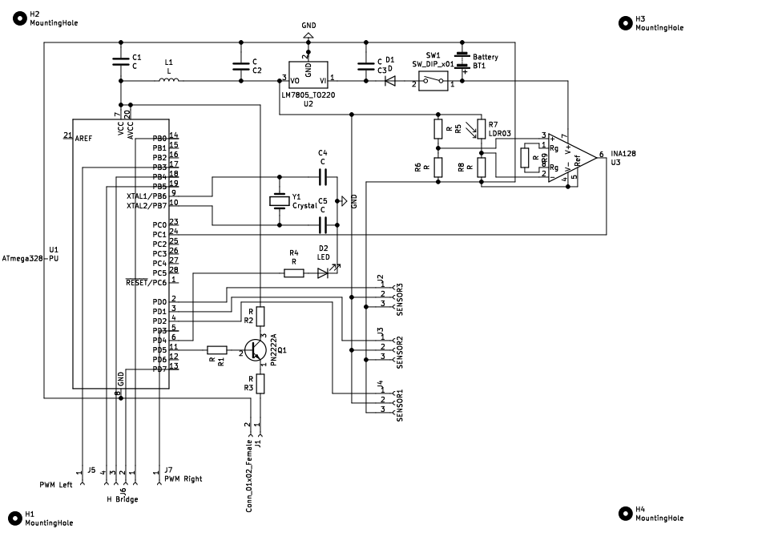
PCB
Desenhamos um PCB de forma a tonar o circuito mais compacto. Este foi desenhado no Kicad.
Figuras 15,16,17 - Esquema Elétrico, Vista Frontal, Vista Traseira. Nesta parte do relatório apresentamos o software que foi utilizado para controlar o AGV.
Variáveis globais
Para tornar a interpretação do código foram criadas algumas variáveis globais
assim como dado nome a portas de modo a tornar o código de mais simples leitura assim como permitir
uma maior facilidade de programação. São também incluídas bibliotecas assim como definida a frequência do CPU.
As variáveis direita, esquerda e centro dão-nos os intervalos apróximados tempo para o servo, 1ms, 1.5ms, 2ms respetivamente,
estes não são o valor exato de modo a não exercer força a mais no servo por causa da direção evitando assim que o mesmo se estrague.
Figura 18 - Variáveis Globais. Inicializações
São usadas inicializações para definir portas como entrada/saida assim como
definir as frequencias dos timer/counter e efetuar as configurações dos mesmos.
Figura 19 - Portas PWM para motores e portas dos sensores IR. O Timer/Counter 0 foi inicializado em modo CTC e com um prescaler de 1024. O Timer/Counter 2
foi inicializado em modo Fast PWM com um prescaler de 1024. Por fim, o Timer/Counter 1 foi inicializado em modo Fast PWM
com TOP em ICR1 e um prescaler de 1024.
Figura 20 - Configuração dos Timer/Counter assim como definição da porta do servo e ADC. Figura 21 - Atribuição do estado inicial do carro assim como ativação dos interrupts. Funções
Nesta parte mostramos as funções do código e na legenda é possível ver o que cada uma faz.
Figura 22 - Estados dos motores assim como direção do servo. Figura 23- Leitura do ADC. Estado da Maquina
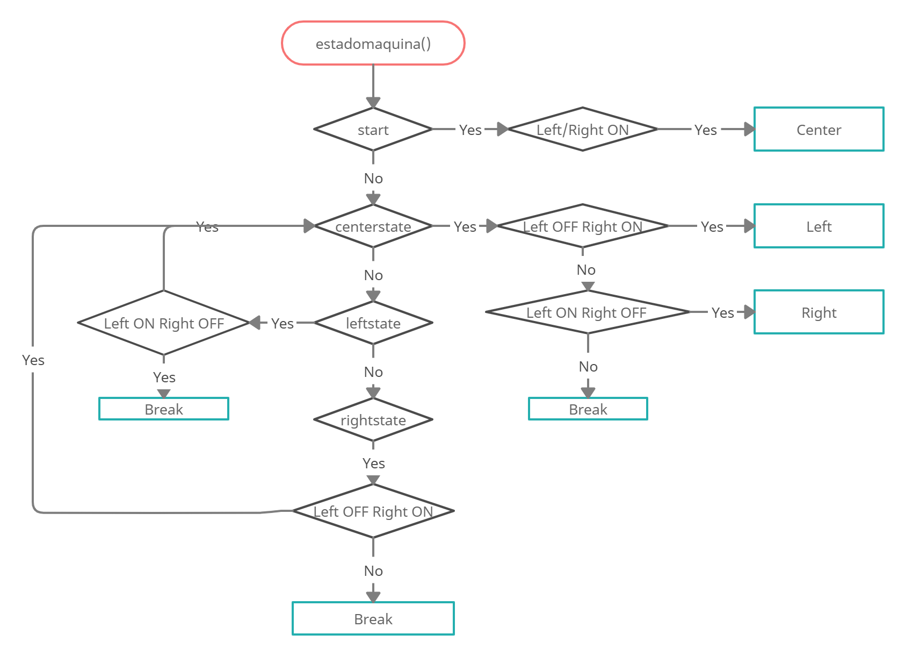
Figura 24 - Fluxograma estado da maquina. Figura 25 - Estado da máquina. Função Main
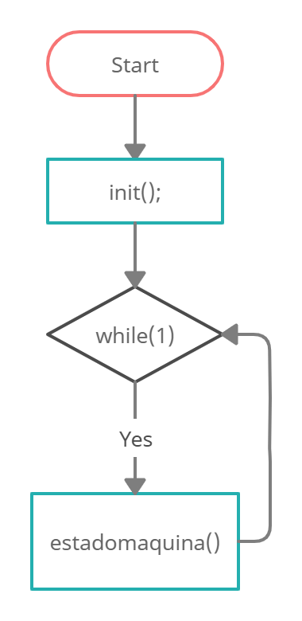
Figura 26 - Fluxograma Main. Figura 27 - Função Main. Interrupções
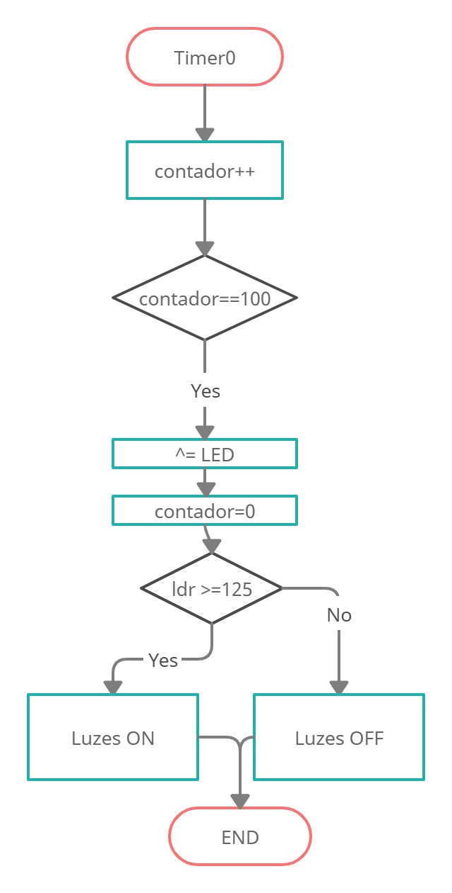
Figura 28 - Fluxograma Timer 0. Figura 29 - Interrupções. Aqui mostramos os resultados e discutimos os mesmos.
Como é observado no vídeo o AGV consegue seguir a linha no chão, este não segue uma rota constante devido
à existência de apenas 2 sensores,
isso faz com que por vezes o mesmo saia da linha e ande na direção que teve na última vez que virou até que a
encontre de novo.
O nosso veículo está desenhado para ser um "todo-o-terreno", e tem facilidade em seguir percursos com mais atrito
e algumas elevações como pode ser
visto no video. Isto pode ser útil para situações em que chegar ao destino é mais importante que seguir um percurso.
O objetivo principal era de que o veículo conseguisse seguir a linha e este foi cumprido.
Foi-nos possível obter competências novas, nomeadamente no desenho de PCB, modelação 3D assim como
o desenvolvimento de já existentes como a programação de microcontroladores.
Algumas barreiras que nos apareceram foram o custo ou a falta de hardware assim
como a dificuldade em ter um ambiente de teste para o projeto, usamos apenas 2 sensores,
porém, estão instalados 3 no AGV isto deve-se ao facto de o 3.º não ter um modo de calibração
o que tirou a sua utilidade, pois na pista que usamos para testar este estava sempre ativo não sendo útil.
O projeto tem espaço para melhoramento e a troca do sensor do meio tornava o controlo mais fácil, visto
ser desenhado como um todo-o-terreno um sonar também podia ser útil para desviar de possíveis objetos
que apresentassem um obstáculo ao AGV.
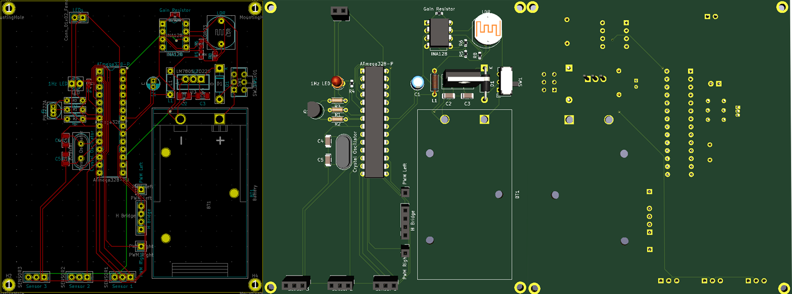
Software
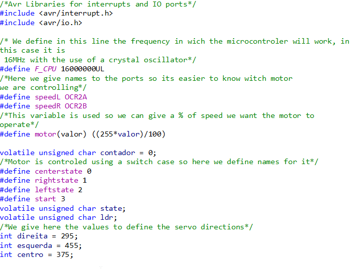
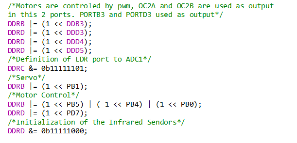
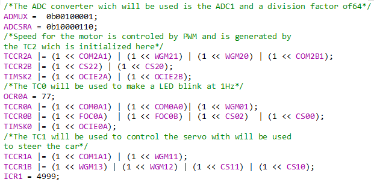
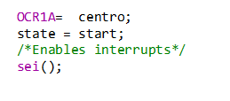
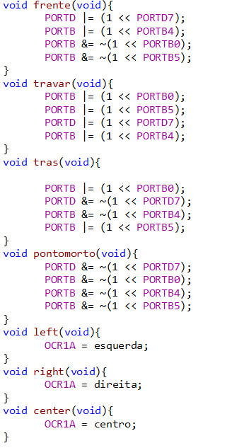
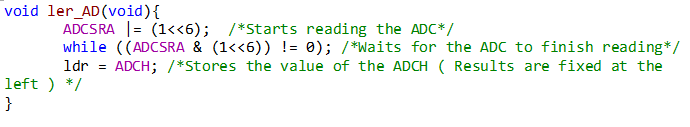
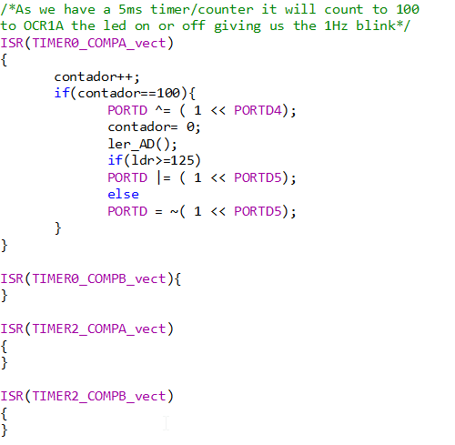
Resultados
Conclusões
Referências